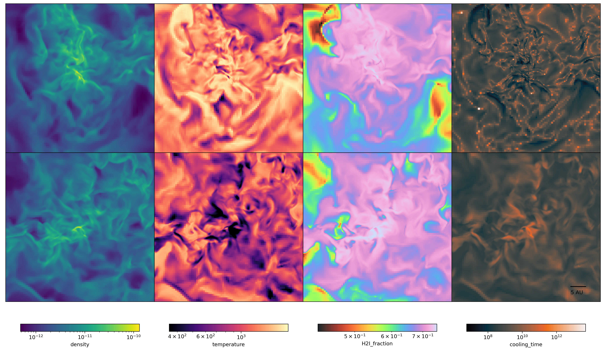
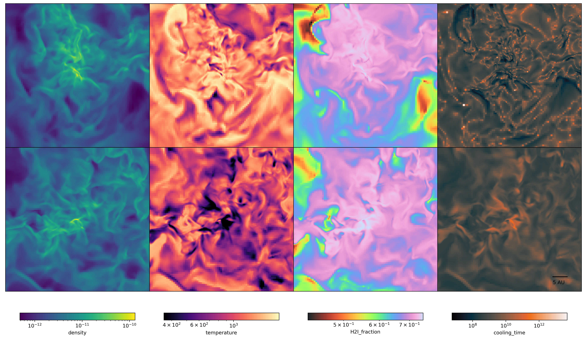
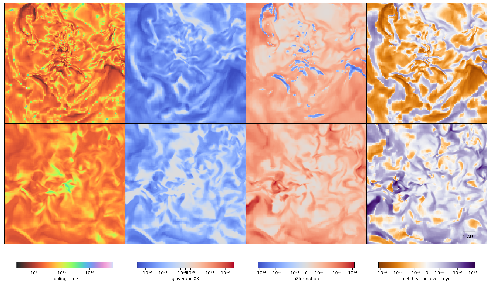
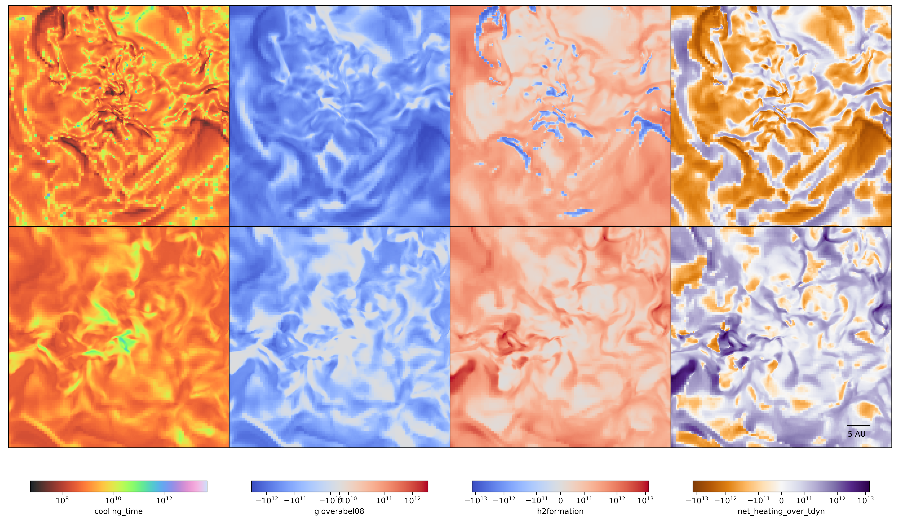

Dissecting the Protostellar Cloud
Contents
Dissecting the Protostellar Cloud#
In this section, we dissect the two different datasets and compare the two in different resolutions, from the cloud scale down to the central few AU regions.
%load_ext autoreload
%autoreload 2
import yt
import matplotlib.pyplot as plt
from utils import load_grackle_dataset, load_dengo_dataset
from plot_utils import plot_multi_sliceplot
/home/kwoksun2/anaconda3/lib/python3.8/site-packages/yt/utilities/logger.py:4: VisibleDeprecationWarning: The configuration file /home/kwoksun2/.config/yt/ytrc is deprecated in favor of /home/kwoksun2/.config/yt/yt.toml. Currently, both are present. Please manually remove the deprecated one to silence this warning.
Deprecated since v4.0.0. This feature will be removed in v4.1.0
from yt.config import ytcfg
ChiantiPy version 0.12.0
found PyQt5 widgets
using PyQt5 widgets
/home/kwoksun2/anaconda3/lib/python3.8/site-packages/ChiantiPy-0.12.0-py3.8.egg/ChiantiPy/tools/data.py:71: UserWarning: klgfb files are not present:
it will not be possible to use the freeBound continuum method
warnings.warn('klgfb files are not present: \n it will not be possible to use the freeBound continuum method')
/home/kwoksun2/anaconda3/lib/python3.8/site-packages/ChiantiPy-0.12.0-py3.8.egg/ChiantiPy/core/IpyMspectrum.py:9: UserWarning: ipyparallel not found. You won't be able to use the ipymspectrum module
warnings.warn("ipyparallel not found. You won't be able to use the ipymspectrum module")
dengo_ds = load_dengo_dataset(
"/home/kwoksun2/data/campus_cluster/bechem_z100_baryon_re3/DD0070/DD0070"
)
grackle_ds = load_grackle_dataset(
"/home/kwoksun2/data/campus_cluster/grackle_z100_baryon/DD0072/DD0072"
)
yt : [INFO ] 2022-09-10 23:17:33,569 Parameters: current_time = 11.301308754354
yt : [INFO ] 2022-09-10 23:17:33,572 Parameters: domain_dimensions = [128 128 128]
yt : [INFO ] 2022-09-10 23:17:33,574 Parameters: domain_left_edge = [0. 0. 0.]
yt : [INFO ] 2022-09-10 23:17:33,575 Parameters: domain_right_edge = [1. 1. 1.]
yt : [INFO ] 2022-09-10 23:17:33,576 Parameters: cosmological_simulation = 1
yt : [INFO ] 2022-09-10 23:17:33,577 Parameters: current_redshift = 16.51946269887
yt : [INFO ] 2022-09-10 23:17:33,578 Parameters: omega_lambda = 0.724
yt : [INFO ] 2022-09-10 23:17:33,579 Parameters: omega_matter = 0.276
yt : [INFO ] 2022-09-10 23:17:33,580 Parameters: omega_radiation = 0
yt : [INFO ] 2022-09-10 23:17:33,581 Parameters: hubble_constant = 0.703
Parsing Hierarchy : 100%|██████████████████████████████████████████████████| 22287/22287 [00:03<00:00, 5806.26it/s]
yt : [INFO ] 2022-09-10 23:17:38,308 Gathering a field list (this may take a moment.)
yt : [WARNING ] 2022-09-10 23:17:41,284 The Derived Field ('gas', 'thermal_energy') is deprecated as of yt v4.0.0 and will be removed in yt v4.1.0. Use ('gas', 'specific_thermal_energy') instead.
yt : [INFO ] 2022-09-10 23:17:42,322 Parameters: current_time = 11.316448063549
yt : [INFO ] 2022-09-10 23:17:42,325 Parameters: domain_dimensions = [128 128 128]
yt : [INFO ] 2022-09-10 23:17:42,326 Parameters: domain_left_edge = [0. 0. 0.]
yt : [INFO ] 2022-09-10 23:17:42,328 Parameters: domain_right_edge = [1. 1. 1.]
yt : [INFO ] 2022-09-10 23:17:42,329 Parameters: cosmological_simulation = 1
yt : [INFO ] 2022-09-10 23:17:42,330 Parameters: current_redshift = 16.50383149637
yt : [INFO ] 2022-09-10 23:17:42,331 Parameters: omega_lambda = 0.724
yt : [INFO ] 2022-09-10 23:17:42,332 Parameters: omega_matter = 0.276
yt : [INFO ] 2022-09-10 23:17:42,333 Parameters: omega_radiation = 0
yt : [INFO ] 2022-09-10 23:17:42,333 Parameters: hubble_constant = 0.703
Parsing Hierarchy : 100%|██████████████████████████████████████████████████| 21992/21992 [00:02<00:00, 7575.31it/s]
yt : [INFO ] 2022-09-10 23:17:46,045 Gathering a field list (this may take a moment.)
m_dengo, c_dengo = dengo_ds.find_max("density")
m_grackle, c_grackle = grackle_ds.find_max("density")
yt : [INFO ] 2022-09-10 23:18:04,523 max value is 1.42583e-10 at 0.4980584005315905 0.5005448366355267 0.4986057875721599
yt : [INFO ] 2022-09-10 23:18:19,869 max value is 1.89069e-10 at 0.4980918404980912 0.5005802176092402 0.4986024849858950
def show_figure(fig):
# create a dummy figure and use its
# manager to display "fig"
dummy = plt.figure()
new_manager = dummy.canvas.manager
new_manager.canvas.figure = fig
fig.set_canvas(new_manager.canvas)
Slice Plot At Different Resolutions#
Density, temperature, molecular H2 fraction and cooling time are plotted
the first row shows slices from Dengo,
the second row shows the slices from Grackle.
fields = ["density", "temperature", "H2I_fraction", "cooling_time"]
cmaps = ["viridis", "magma", "cmyt.pastel", "cmyt.dusk"]
widths = [
1 * yt.units.kpc,
100 * yt.units.pc,
10 * yt.units.pc,
1e4 * yt.units.au,
1e3 * yt.units.au,
1e2 * yt.units.au,
5e1 * yt.units.au,
]
rulers = [
100 * yt.units.pc,
10 * yt.units.pc,
1 * yt.units.pc,
1e3 * yt.units.au,
1e2 * yt.units.au,
1e1 * yt.units.au,
5e0 * yt.units.au,
]
for width, rule_scale in zip(widths, rulers):
fig = plot_multi_sliceplot(
dengo_ds,
grackle_ds,
fields=fields,
width=width,
rule_scale=rule_scale,
dengo_center=c_dengo,
grackle_center=c_grackle,
cmaps=cmaps,
use_symlog=[False, False, False, False],
)
show_figure(fig)
yt : [INFO ] 2022-09-10 23:18:30,779 xlim = -0.001942 0.998058
yt : [INFO ] 2022-09-10 23:18:30,780 ylim = 0.000545 1.000545
yt : [INFO ] 2022-09-10 23:18:30,781 xlim = -0.001942 0.998058
yt : [INFO ] 2022-09-10 23:18:30,782 ylim = 0.000545 1.000545
yt : [INFO ] 2022-09-10 23:18:30,784 Making a fixed resolution buffer of (('gas', 'cooling_time')) 800 by 800
yt : [INFO ] 2022-09-10 23:18:31,030 Making a fixed resolution buffer of (('gas', 'density')) 800 by 800
yt : [INFO ] 2022-09-10 23:18:31,049 Making a fixed resolution buffer of (('gas', 'H2I_fraction')) 800 by 800
yt : [INFO ] 2022-09-10 23:18:31,066 Making a fixed resolution buffer of (('gas', 'temperature')) 800 by 800
yt : [INFO ] 2022-09-10 23:18:51,631 xlim = -0.001908 0.998092
yt : [INFO ] 2022-09-10 23:18:51,634 ylim = 0.000580 1.000580
yt : [INFO ] 2022-09-10 23:18:51,636 xlim = -0.001908 0.998092
yt : [INFO ] 2022-09-10 23:18:51,637 ylim = 0.000580 1.000580
yt : [INFO ] 2022-09-10 23:18:51,642 Making a fixed resolution buffer of (('gas', 'cooling_time')) 800 by 800
yt : [INFO ] 2022-09-10 23:18:51,945 Making a fixed resolution buffer of (('gas', 'density')) 800 by 800
yt : [INFO ] 2022-09-10 23:18:51,963 Making a fixed resolution buffer of (('gas', 'H2I_fraction')) 800 by 800
yt : [INFO ] 2022-09-10 23:18:51,982 Making a fixed resolution buffer of (('gas', 'temperature')) 800 by 800
yt : [INFO ] 2022-09-10 23:18:52,610 Making a fixed resolution buffer of (density) 512 by 512
yt : [INFO ] 2022-09-10 23:18:52,650 Making a fixed resolution buffer of (temperature) 512 by 512
yt : [INFO ] 2022-09-10 23:18:52,687 Making a fixed resolution buffer of (H2I_fraction) 512 by 512
yt : [INFO ] 2022-09-10 23:18:52,725 Making a fixed resolution buffer of (cooling_time) 512 by 512
density
temperature
H2I_fraction
cooling_time
yt : [INFO ] 2022-09-10 23:18:58,115 xlim = -0.001942 0.998058
yt : [INFO ] 2022-09-10 23:18:58,118 ylim = 0.000545 1.000545
yt : [INFO ] 2022-09-10 23:18:58,120 xlim = -0.001942 0.998058
yt : [INFO ] 2022-09-10 23:18:58,121 ylim = 0.000545 1.000545
yt : [INFO ] 2022-09-10 23:18:58,124 Making a fixed resolution buffer of (('gas', 'cooling_time')) 800 by 800
yt : [INFO ] 2022-09-10 23:18:58,384 Making a fixed resolution buffer of (('gas', 'density')) 800 by 800
yt : [INFO ] 2022-09-10 23:18:58,402 Making a fixed resolution buffer of (('gas', 'H2I_fraction')) 800 by 800
yt : [INFO ] 2022-09-10 23:18:58,421 Making a fixed resolution buffer of (('gas', 'temperature')) 800 by 800
yt : [INFO ] 2022-09-10 23:19:01,964 xlim = -0.001908 0.998092
yt : [INFO ] 2022-09-10 23:19:01,966 ylim = 0.000580 1.000580
yt : [INFO ] 2022-09-10 23:19:01,968 xlim = -0.001908 0.998092
yt : [INFO ] 2022-09-10 23:19:01,968 ylim = 0.000580 1.000580
yt : [INFO ] 2022-09-10 23:19:01,972 Making a fixed resolution buffer of (('gas', 'cooling_time')) 800 by 800
yt : [INFO ] 2022-09-10 23:19:02,229 Making a fixed resolution buffer of (('gas', 'density')) 800 by 800
yt : [INFO ] 2022-09-10 23:19:02,248 Making a fixed resolution buffer of (('gas', 'H2I_fraction')) 800 by 800
yt : [INFO ] 2022-09-10 23:19:02,266 Making a fixed resolution buffer of (('gas', 'temperature')) 800 by 800
yt : [INFO ] 2022-09-10 23:19:02,906 Making a fixed resolution buffer of (density) 512 by 512
yt : [INFO ] 2022-09-10 23:19:02,941 Making a fixed resolution buffer of (temperature) 512 by 512
yt : [INFO ] 2022-09-10 23:19:02,980 Making a fixed resolution buffer of (H2I_fraction) 512 by 512
yt : [INFO ] 2022-09-10 23:19:03,015 Making a fixed resolution buffer of (cooling_time) 512 by 512
density
temperature
H2I_fraction
cooling_time
yt : [INFO ] 2022-09-10 23:19:06,165 xlim = -0.001942 0.998058
yt : [INFO ] 2022-09-10 23:19:06,166 ylim = 0.000545 1.000545
yt : [INFO ] 2022-09-10 23:19:06,168 xlim = -0.001942 0.998058
yt : [INFO ] 2022-09-10 23:19:06,169 ylim = 0.000545 1.000545
yt : [INFO ] 2022-09-10 23:19:06,172 Making a fixed resolution buffer of (('gas', 'cooling_time')) 800 by 800
yt : [INFO ] 2022-09-10 23:19:06,408 Making a fixed resolution buffer of (('gas', 'density')) 800 by 800
yt : [INFO ] 2022-09-10 23:19:06,425 Making a fixed resolution buffer of (('gas', 'H2I_fraction')) 800 by 800
yt : [INFO ] 2022-09-10 23:19:06,443 Making a fixed resolution buffer of (('gas', 'temperature')) 800 by 800
yt : [INFO ] 2022-09-10 23:19:09,983 xlim = -0.001908 0.998092
yt : [INFO ] 2022-09-10 23:19:09,986 ylim = 0.000580 1.000580
yt : [INFO ] 2022-09-10 23:19:09,987 xlim = -0.001908 0.998092
yt : [INFO ] 2022-09-10 23:19:09,988 ylim = 0.000580 1.000580
yt : [INFO ] 2022-09-10 23:19:09,993 Making a fixed resolution buffer of (('gas', 'cooling_time')) 800 by 800
yt : [INFO ] 2022-09-10 23:19:10,252 Making a fixed resolution buffer of (('gas', 'density')) 800 by 800
yt : [INFO ] 2022-09-10 23:19:10,272 Making a fixed resolution buffer of (('gas', 'H2I_fraction')) 800 by 800
yt : [INFO ] 2022-09-10 23:19:10,290 Making a fixed resolution buffer of (('gas', 'temperature')) 800 by 800
yt : [INFO ] 2022-09-10 23:19:10,905 Making a fixed resolution buffer of (density) 512 by 512
yt : [INFO ] 2022-09-10 23:19:10,936 Making a fixed resolution buffer of (temperature) 512 by 512
yt : [INFO ] 2022-09-10 23:19:10,996 Making a fixed resolution buffer of (H2I_fraction) 512 by 512
yt : [INFO ] 2022-09-10 23:19:11,046 Making a fixed resolution buffer of (cooling_time) 512 by 512
density
temperature
H2I_fraction
cooling_time
yt : [INFO ] 2022-09-10 23:19:14,165 xlim = -0.001942 0.998058
yt : [INFO ] 2022-09-10 23:19:14,167 ylim = 0.000545 1.000545
yt : [INFO ] 2022-09-10 23:19:14,168 xlim = -0.001942 0.998058
yt : [INFO ] 2022-09-10 23:19:14,169 ylim = 0.000545 1.000545
yt : [INFO ] 2022-09-10 23:19:14,173 Making a fixed resolution buffer of (('gas', 'cooling_time')) 800 by 800
yt : [INFO ] 2022-09-10 23:19:14,424 Making a fixed resolution buffer of (('gas', 'density')) 800 by 800
yt : [INFO ] 2022-09-10 23:19:14,443 Making a fixed resolution buffer of (('gas', 'H2I_fraction')) 800 by 800
yt : [INFO ] 2022-09-10 23:19:14,464 Making a fixed resolution buffer of (('gas', 'temperature')) 800 by 800
yt : [INFO ] 2022-09-10 23:19:17,999 xlim = -0.001908 0.998092
yt : [INFO ] 2022-09-10 23:19:18,000 ylim = 0.000580 1.000580
yt : [INFO ] 2022-09-10 23:19:18,001 xlim = -0.001908 0.998092
yt : [INFO ] 2022-09-10 23:19:18,002 ylim = 0.000580 1.000580
yt : [INFO ] 2022-09-10 23:19:18,005 Making a fixed resolution buffer of (('gas', 'cooling_time')) 800 by 800
yt : [INFO ] 2022-09-10 23:19:18,275 Making a fixed resolution buffer of (('gas', 'density')) 800 by 800
yt : [INFO ] 2022-09-10 23:19:18,292 Making a fixed resolution buffer of (('gas', 'H2I_fraction')) 800 by 800
yt : [INFO ] 2022-09-10 23:19:18,310 Making a fixed resolution buffer of (('gas', 'temperature')) 800 by 800
yt : [INFO ] 2022-09-10 23:19:18,916 Making a fixed resolution buffer of (density) 512 by 512
yt : [INFO ] 2022-09-10 23:19:18,948 Making a fixed resolution buffer of (temperature) 512 by 512
yt : [INFO ] 2022-09-10 23:19:19,007 Making a fixed resolution buffer of (H2I_fraction) 512 by 512
yt : [INFO ] 2022-09-10 23:19:19,054 Making a fixed resolution buffer of (cooling_time) 512 by 512
density
temperature
H2I_fraction
cooling_time
yt : [INFO ] 2022-09-10 23:19:22,193 xlim = -0.001942 0.998058
yt : [INFO ] 2022-09-10 23:19:22,194 ylim = 0.000545 1.000545
yt : [INFO ] 2022-09-10 23:19:22,195 xlim = -0.001942 0.998058
yt : [INFO ] 2022-09-10 23:19:22,196 ylim = 0.000545 1.000545
yt : [INFO ] 2022-09-10 23:19:22,201 Making a fixed resolution buffer of (('gas', 'cooling_time')) 800 by 800
yt : [INFO ] 2022-09-10 23:19:22,475 Making a fixed resolution buffer of (('gas', 'density')) 800 by 800
yt : [INFO ] 2022-09-10 23:19:22,493 Making a fixed resolution buffer of (('gas', 'H2I_fraction')) 800 by 800
yt : [INFO ] 2022-09-10 23:19:22,518 Making a fixed resolution buffer of (('gas', 'temperature')) 800 by 800
yt : [INFO ] 2022-09-10 23:19:26,084 xlim = -0.001908 0.998092
yt : [INFO ] 2022-09-10 23:19:26,085 ylim = 0.000580 1.000580
yt : [INFO ] 2022-09-10 23:19:26,086 xlim = -0.001908 0.998092
yt : [INFO ] 2022-09-10 23:19:26,087 ylim = 0.000580 1.000580
yt : [INFO ] 2022-09-10 23:19:26,091 Making a fixed resolution buffer of (('gas', 'cooling_time')) 800 by 800
yt : [INFO ] 2022-09-10 23:19:26,357 Making a fixed resolution buffer of (('gas', 'density')) 800 by 800
yt : [INFO ] 2022-09-10 23:19:26,382 Making a fixed resolution buffer of (('gas', 'H2I_fraction')) 800 by 800
yt : [INFO ] 2022-09-10 23:19:26,407 Making a fixed resolution buffer of (('gas', 'temperature')) 800 by 800
yt : [INFO ] 2022-09-10 23:19:27,061 Making a fixed resolution buffer of (density) 512 by 512
yt : [INFO ] 2022-09-10 23:19:27,096 Making a fixed resolution buffer of (temperature) 512 by 512
yt : [INFO ] 2022-09-10 23:19:27,132 Making a fixed resolution buffer of (H2I_fraction) 512 by 512
yt : [INFO ] 2022-09-10 23:19:27,169 Making a fixed resolution buffer of (cooling_time) 512 by 512
density
temperature
H2I_fraction
cooling_time
yt : [INFO ] 2022-09-10 23:19:30,267 xlim = -0.001942 0.998058
yt : [INFO ] 2022-09-10 23:19:30,268 ylim = 0.000545 1.000545
yt : [INFO ] 2022-09-10 23:19:30,270 xlim = -0.001942 0.998058
yt : [INFO ] 2022-09-10 23:19:30,271 ylim = 0.000545 1.000545
yt : [INFO ] 2022-09-10 23:19:30,274 Making a fixed resolution buffer of (('gas', 'cooling_time')) 800 by 800
yt : [INFO ] 2022-09-10 23:19:30,521 Making a fixed resolution buffer of (('gas', 'density')) 800 by 800
yt : [INFO ] 2022-09-10 23:19:30,545 Making a fixed resolution buffer of (('gas', 'H2I_fraction')) 800 by 800
yt : [INFO ] 2022-09-10 23:19:30,570 Making a fixed resolution buffer of (('gas', 'temperature')) 800 by 800
yt : [INFO ] 2022-09-10 23:19:34,188 xlim = -0.001908 0.998092
yt : [INFO ] 2022-09-10 23:19:34,190 ylim = 0.000580 1.000580
yt : [INFO ] 2022-09-10 23:19:34,191 xlim = -0.001908 0.998092
yt : [INFO ] 2022-09-10 23:19:34,192 ylim = 0.000580 1.000580
yt : [INFO ] 2022-09-10 23:19:34,196 Making a fixed resolution buffer of (('gas', 'cooling_time')) 800 by 800
yt : [INFO ] 2022-09-10 23:19:34,457 Making a fixed resolution buffer of (('gas', 'density')) 800 by 800
yt : [INFO ] 2022-09-10 23:19:34,477 Making a fixed resolution buffer of (('gas', 'H2I_fraction')) 800 by 800
yt : [INFO ] 2022-09-10 23:19:34,496 Making a fixed resolution buffer of (('gas', 'temperature')) 800 by 800
yt : [INFO ] 2022-09-10 23:19:35,137 Making a fixed resolution buffer of (density) 512 by 512
yt : [INFO ] 2022-09-10 23:19:35,168 Making a fixed resolution buffer of (temperature) 512 by 512
yt : [INFO ] 2022-09-10 23:19:35,199 Making a fixed resolution buffer of (H2I_fraction) 512 by 512
yt : [INFO ] 2022-09-10 23:19:35,231 Making a fixed resolution buffer of (cooling_time) 512 by 512
density
temperature
H2I_fraction
cooling_time
yt : [INFO ] 2022-09-10 23:19:38,490 xlim = -0.001942 0.998058
yt : [INFO ] 2022-09-10 23:19:38,491 ylim = 0.000545 1.000545
yt : [INFO ] 2022-09-10 23:19:38,492 xlim = -0.001942 0.998058
yt : [INFO ] 2022-09-10 23:19:38,493 ylim = 0.000545 1.000545
yt : [INFO ] 2022-09-10 23:19:38,497 Making a fixed resolution buffer of (('gas', 'cooling_time')) 800 by 800
yt : [INFO ] 2022-09-10 23:19:38,731 Making a fixed resolution buffer of (('gas', 'density')) 800 by 800
yt : [INFO ] 2022-09-10 23:19:38,750 Making a fixed resolution buffer of (('gas', 'H2I_fraction')) 800 by 800
yt : [INFO ] 2022-09-10 23:19:38,769 Making a fixed resolution buffer of (('gas', 'temperature')) 800 by 800
yt : [INFO ] 2022-09-10 23:19:42,309 xlim = -0.001908 0.998092
yt : [INFO ] 2022-09-10 23:19:42,310 ylim = 0.000580 1.000580
yt : [INFO ] 2022-09-10 23:19:42,312 xlim = -0.001908 0.998092
yt : [INFO ] 2022-09-10 23:19:42,313 ylim = 0.000580 1.000580
yt : [INFO ] 2022-09-10 23:19:42,316 Making a fixed resolution buffer of (('gas', 'cooling_time')) 800 by 800
yt : [INFO ] 2022-09-10 23:19:42,578 Making a fixed resolution buffer of (('gas', 'density')) 800 by 800
yt : [INFO ] 2022-09-10 23:19:42,597 Making a fixed resolution buffer of (('gas', 'H2I_fraction')) 800 by 800
yt : [INFO ] 2022-09-10 23:19:42,615 Making a fixed resolution buffer of (('gas', 'temperature')) 800 by 800
yt : [INFO ] 2022-09-10 23:19:43,251 Making a fixed resolution buffer of (density) 512 by 512
yt : [INFO ] 2022-09-10 23:19:43,277 Making a fixed resolution buffer of (temperature) 512 by 512
yt : [INFO ] 2022-09-10 23:19:43,306 Making a fixed resolution buffer of (H2I_fraction) 512 by 512
yt : [INFO ] 2022-09-10 23:19:43,335 Making a fixed resolution buffer of (cooling_time) 512 by 512
density
temperature
H2I_fraction
cooling_time

 

Morphology of the gas clouds from the two simulation Suites#
They show high resemblance in terms of morphorlogy down to \(\mathrm{1 pc - 10^4 AU}\) scale across density, temperature, molecular hydrogen fraction, as well as instantaneous cooling timescale.
Zooming in onto the denser region, Grackle simulations (second row) show a significantly lower temperature in the innermost regions. That said, Dengo also shows an drop in temperature towards the most central sub-au scale region.
Another point of notice is that in the innermost 1000AU scale, the cooling time from the Dengo panel is not as spatially smooth as the one from Grackle. There are regions/ pixels that have significant discrete flashing. In the plot to come we show that those might be attributed from the excess/deficit of the H2 formation/dissociation binding energy.
Thermal Process At work#
Various cooling/ heating processes takes place as the reaction progresses.
In this section we look into the 3 major thermal process that are the collision induced emission cooling, molecular hydrogen continuum cooling, and the net binding energy coming from the creation and destruction of molecular hydrogen.
The right most column demonstrate the net (instantaneous) energy injection into the system
fields = ["cooling_time", "gloverabel08", "h2formation", "net_heating_over_tdyn"]
cmaps = ["cmyt.pastel", "coolwarm", "coolwarm", "PuOr"]
for width, rule_scale in zip(widths, rulers):
fig = plot_multi_sliceplot(
dengo_ds,
grackle_ds,
fields=fields,
width=width,
rule_scale=rule_scale,
dengo_center=c_dengo,
grackle_center=c_grackle,
cmaps=cmaps,
use_symlog=[False, True, True, False],
scale_color="k",
)
show_figure(fig)
yt : [INFO ] 2022-09-10 23:20:33,238 xlim = -0.001942 0.998058
yt : [INFO ] 2022-09-10 23:20:33,239 ylim = 0.000545 1.000545
yt : [INFO ] 2022-09-10 23:20:33,240 xlim = -0.001942 0.998058
yt : [INFO ] 2022-09-10 23:20:33,241 ylim = 0.000545 1.000545
yt : [INFO ] 2022-09-10 23:20:33,243 Making a fixed resolution buffer of (('gas', 'cooling_time')) 800 by 800
yt : [INFO ] 2022-09-10 23:20:33,478 Making a fixed resolution buffer of (('gas', 'gloverabel08')) 800 by 800
yt : [INFO ] 2022-09-10 23:20:33,495 Making a fixed resolution buffer of (('gas', 'h2formation')) 800 by 800
yt : [INFO ] 2022-09-10 23:20:33,512 Making a fixed resolution buffer of (('gas', 'net_heating_over_tdyn')) 800 by 800
yt : [WARNING ] 2022-09-10 23:20:33,543 Plotting ('gas', 'h2formation'): Both positive and negative values. Min = -227370.43728139088 erg/g, Max = 5.15186955588639e-11 erg/g.
yt : [WARNING ] 2022-09-10 23:20:33,544 Switching to symlog colorbar scaling.
yt : [WARNING ] 2022-09-10 23:20:33,807 Plotting ('gas', 'gloverabel08'): All negative values. Max = -4.270947682792711e-11 erg/g.
yt : [WARNING ] 2022-09-10 23:20:33,808 Switching to symlog colorbar scaling.
yt : [WARNING ] 2022-09-10 23:20:34,198 Plotting ('gas', 'net_heating_over_tdyn'): All negative values. Max = -4.271393998330838e-11 erg/g.
yt : [WARNING ] 2022-09-10 23:20:34,199 Switching to symlog colorbar scaling.
yt : [INFO ] 2022-09-10 23:20:40,004 xlim = -0.001908 0.998092
yt : [INFO ] 2022-09-10 23:20:40,005 ylim = 0.000580 1.000580
yt : [INFO ] 2022-09-10 23:20:40,006 xlim = -0.001908 0.998092
yt : [INFO ] 2022-09-10 23:20:40,007 ylim = 0.000580 1.000580
yt : [INFO ] 2022-09-10 23:20:40,009 Making a fixed resolution buffer of (('gas', 'cooling_time')) 800 by 800
yt : [INFO ] 2022-09-10 23:20:40,256 Making a fixed resolution buffer of (('gas', 'gloverabel08')) 800 by 800
yt : [INFO ] 2022-09-10 23:20:40,273 Making a fixed resolution buffer of (('gas', 'h2formation')) 800 by 800
yt : [INFO ] 2022-09-10 23:20:40,291 Making a fixed resolution buffer of (('gas', 'net_heating_over_tdyn')) 800 by 800
yt : [WARNING ] 2022-09-10 23:20:40,322 Plotting ('gas', 'h2formation'): Both positive and negative values. Min = -80758.59045003717 erg/g, Max = 7.570283949815238e-11 erg/g.
yt : [WARNING ] 2022-09-10 23:20:40,323 Switching to symlog colorbar scaling.
yt : [WARNING ] 2022-09-10 23:20:40,586 Plotting ('gas', 'gloverabel08'): All negative values. Max = -4.4313170923317115e-11 erg/g.
yt : [WARNING ] 2022-09-10 23:20:40,587 Switching to symlog colorbar scaling.
yt : [WARNING ] 2022-09-10 23:20:40,998 Plotting ('gas', 'net_heating_over_tdyn'): All negative values. Max = -4.4317687591086675e-11 erg/g.
yt : [WARNING ] 2022-09-10 23:20:40,998 Switching to symlog colorbar scaling.
yt : [INFO ] 2022-09-10 23:20:41,542 Making a fixed resolution buffer of (cooling_time) 512 by 512
yt : [INFO ] 2022-09-10 23:20:41,574 Making a fixed resolution buffer of (gloverabel08) 512 by 512
yt : [INFO ] 2022-09-10 23:20:41,604 Making a fixed resolution buffer of (h2formation) 512 by 512
yt : [INFO ] 2022-09-10 23:20:41,635 Making a fixed resolution buffer of (net_heating_over_tdyn) 512 by 512
cooling_time
gloverabel08
h2formation
net_heating_over_tdyn
yt : [INFO ] 2022-09-10 23:20:46,841 xlim = -0.001942 0.998058
yt : [INFO ] 2022-09-10 23:20:46,842 ylim = 0.000545 1.000545
yt : [INFO ] 2022-09-10 23:20:46,843 xlim = -0.001942 0.998058
yt : [INFO ] 2022-09-10 23:20:46,843 ylim = 0.000545 1.000545
yt : [INFO ] 2022-09-10 23:20:46,846 Making a fixed resolution buffer of (('gas', 'cooling_time')) 800 by 800
yt : [INFO ] 2022-09-10 23:20:47,076 Making a fixed resolution buffer of (('gas', 'gloverabel08')) 800 by 800
yt : [INFO ] 2022-09-10 23:20:47,093 Making a fixed resolution buffer of (('gas', 'h2formation')) 800 by 800
yt : [INFO ] 2022-09-10 23:20:47,110 Making a fixed resolution buffer of (('gas', 'net_heating_over_tdyn')) 800 by 800
yt : [WARNING ] 2022-09-10 23:20:47,141 Plotting ('gas', 'h2formation'): Both positive and negative values. Min = -227370.43728139088 erg/g, Max = 5.15186955588639e-11 erg/g.
yt : [WARNING ] 2022-09-10 23:20:47,142 Switching to symlog colorbar scaling.
yt : [WARNING ] 2022-09-10 23:20:47,406 Plotting ('gas', 'gloverabel08'): All negative values. Max = -4.270947682792711e-11 erg/g.
yt : [WARNING ] 2022-09-10 23:20:47,406 Switching to symlog colorbar scaling.
yt : [WARNING ] 2022-09-10 23:20:47,815 Plotting ('gas', 'net_heating_over_tdyn'): All negative values. Max = -4.271393998330838e-11 erg/g.
yt : [WARNING ] 2022-09-10 23:20:47,816 Switching to symlog colorbar scaling.
yt : [INFO ] 2022-09-10 23:20:53,648 xlim = -0.001908 0.998092
yt : [INFO ] 2022-09-10 23:20:53,648 ylim = 0.000580 1.000580
yt : [INFO ] 2022-09-10 23:20:53,650 xlim = -0.001908 0.998092
yt : [INFO ] 2022-09-10 23:20:53,650 ylim = 0.000580 1.000580
yt : [INFO ] 2022-09-10 23:20:53,653 Making a fixed resolution buffer of (('gas', 'cooling_time')) 800 by 800
yt : [INFO ] 2022-09-10 23:20:53,897 Making a fixed resolution buffer of (('gas', 'gloverabel08')) 800 by 800
yt : [INFO ] 2022-09-10 23:20:53,915 Making a fixed resolution buffer of (('gas', 'h2formation')) 800 by 800
yt : [INFO ] 2022-09-10 23:20:53,933 Making a fixed resolution buffer of (('gas', 'net_heating_over_tdyn')) 800 by 800
yt : [WARNING ] 2022-09-10 23:20:53,964 Plotting ('gas', 'h2formation'): Both positive and negative values. Min = -80758.59045003717 erg/g, Max = 7.570283949815238e-11 erg/g.
yt : [WARNING ] 2022-09-10 23:20:53,965 Switching to symlog colorbar scaling.
yt : [WARNING ] 2022-09-10 23:20:54,228 Plotting ('gas', 'gloverabel08'): All negative values. Max = -4.4313170923317115e-11 erg/g.
yt : [WARNING ] 2022-09-10 23:20:54,229 Switching to symlog colorbar scaling.
yt : [WARNING ] 2022-09-10 23:20:54,632 Plotting ('gas', 'net_heating_over_tdyn'): All negative values. Max = -4.4317687591086675e-11 erg/g.
yt : [WARNING ] 2022-09-10 23:20:54,632 Switching to symlog colorbar scaling.
yt : [INFO ] 2022-09-10 23:20:55,188 Making a fixed resolution buffer of (cooling_time) 512 by 512
yt : [INFO ] 2022-09-10 23:20:55,219 Making a fixed resolution buffer of (gloverabel08) 512 by 512
yt : [INFO ] 2022-09-10 23:20:55,249 Making a fixed resolution buffer of (h2formation) 512 by 512
yt : [INFO ] 2022-09-10 23:20:55,279 Making a fixed resolution buffer of (net_heating_over_tdyn) 512 by 512
cooling_time
gloverabel08
h2formation
net_heating_over_tdyn
yt : [INFO ] 2022-09-10 23:21:00,496 xlim = -0.001942 0.998058
yt : [INFO ] 2022-09-10 23:21:00,497 ylim = 0.000545 1.000545
yt : [INFO ] 2022-09-10 23:21:00,498 xlim = -0.001942 0.998058
yt : [INFO ] 2022-09-10 23:21:00,498 ylim = 0.000545 1.000545
yt : [INFO ] 2022-09-10 23:21:00,501 Making a fixed resolution buffer of (('gas', 'cooling_time')) 800 by 800
yt : [INFO ] 2022-09-10 23:21:00,734 Making a fixed resolution buffer of (('gas', 'gloverabel08')) 800 by 800
yt : [INFO ] 2022-09-10 23:21:00,750 Making a fixed resolution buffer of (('gas', 'h2formation')) 800 by 800
yt : [INFO ] 2022-09-10 23:21:00,767 Making a fixed resolution buffer of (('gas', 'net_heating_over_tdyn')) 800 by 800
yt : [WARNING ] 2022-09-10 23:21:00,798 Plotting ('gas', 'h2formation'): Both positive and negative values. Min = -227370.43728139088 erg/g, Max = 5.15186955588639e-11 erg/g.
yt : [WARNING ] 2022-09-10 23:21:00,798 Switching to symlog colorbar scaling.
yt : [WARNING ] 2022-09-10 23:21:01,064 Plotting ('gas', 'gloverabel08'): All negative values. Max = -4.270947682792711e-11 erg/g.
yt : [WARNING ] 2022-09-10 23:21:01,065 Switching to symlog colorbar scaling.
yt : [WARNING ] 2022-09-10 23:21:01,464 Plotting ('gas', 'net_heating_over_tdyn'): All negative values. Max = -4.271393998330838e-11 erg/g.
yt : [WARNING ] 2022-09-10 23:21:01,465 Switching to symlog colorbar scaling.
yt : [INFO ] 2022-09-10 23:21:07,289 xlim = -0.001908 0.998092
yt : [INFO ] 2022-09-10 23:21:07,290 ylim = 0.000580 1.000580
yt : [INFO ] 2022-09-10 23:21:07,292 xlim = -0.001908 0.998092
yt : [INFO ] 2022-09-10 23:21:07,292 ylim = 0.000580 1.000580
yt : [INFO ] 2022-09-10 23:21:07,295 Making a fixed resolution buffer of (('gas', 'cooling_time')) 800 by 800
yt : [INFO ] 2022-09-10 23:21:07,544 Making a fixed resolution buffer of (('gas', 'gloverabel08')) 800 by 800
yt : [INFO ] 2022-09-10 23:21:07,562 Making a fixed resolution buffer of (('gas', 'h2formation')) 800 by 800
yt : [INFO ] 2022-09-10 23:21:07,581 Making a fixed resolution buffer of (('gas', 'net_heating_over_tdyn')) 800 by 800
yt : [WARNING ] 2022-09-10 23:21:07,615 Plotting ('gas', 'h2formation'): Both positive and negative values. Min = -80758.59045003717 erg/g, Max = 7.570283949815238e-11 erg/g.
yt : [WARNING ] 2022-09-10 23:21:07,616 Switching to symlog colorbar scaling.
yt : [WARNING ] 2022-09-10 23:21:07,901 Plotting ('gas', 'gloverabel08'): All negative values. Max = -4.4313170923317115e-11 erg/g.
yt : [WARNING ] 2022-09-10 23:21:07,903 Switching to symlog colorbar scaling.
yt : [WARNING ] 2022-09-10 23:21:08,329 Plotting ('gas', 'net_heating_over_tdyn'): All negative values. Max = -4.4317687591086675e-11 erg/g.
yt : [WARNING ] 2022-09-10 23:21:08,330 Switching to symlog colorbar scaling.
yt : [INFO ] 2022-09-10 23:21:08,894 Making a fixed resolution buffer of (cooling_time) 512 by 512
yt : [INFO ] 2022-09-10 23:21:08,923 Making a fixed resolution buffer of (gloverabel08) 512 by 512
yt : [INFO ] 2022-09-10 23:21:08,951 Making a fixed resolution buffer of (h2formation) 512 by 512
yt : [INFO ] 2022-09-10 23:21:08,978 Making a fixed resolution buffer of (net_heating_over_tdyn) 512 by 512
cooling_time
gloverabel08
h2formation
net_heating_over_tdyn
yt : [INFO ] 2022-09-10 23:21:16,864 xlim = -0.001942 0.998058
yt : [INFO ] 2022-09-10 23:21:16,866 ylim = 0.000545 1.000545
yt : [INFO ] 2022-09-10 23:21:16,867 xlim = -0.001942 0.998058
yt : [INFO ] 2022-09-10 23:21:16,868 ylim = 0.000545 1.000545
yt : [INFO ] 2022-09-10 23:21:16,872 Making a fixed resolution buffer of (('gas', 'cooling_time')) 800 by 800
yt : [INFO ] 2022-09-10 23:21:17,124 Making a fixed resolution buffer of (('gas', 'gloverabel08')) 800 by 800
yt : [INFO ] 2022-09-10 23:21:17,143 Making a fixed resolution buffer of (('gas', 'h2formation')) 800 by 800
yt : [INFO ] 2022-09-10 23:21:17,162 Making a fixed resolution buffer of (('gas', 'net_heating_over_tdyn')) 800 by 800
yt : [WARNING ] 2022-09-10 23:21:17,196 Plotting ('gas', 'h2formation'): Both positive and negative values. Min = -227370.43728139088 erg/g, Max = 5.15186955588639e-11 erg/g.
yt : [WARNING ] 2022-09-10 23:21:17,197 Switching to symlog colorbar scaling.
yt : [WARNING ] 2022-09-10 23:21:18,950 Plotting ('gas', 'gloverabel08'): All negative values. Max = -4.270947682792711e-11 erg/g.
yt : [WARNING ] 2022-09-10 23:21:18,952 Switching to symlog colorbar scaling.
yt : [WARNING ] 2022-09-10 23:21:19,375 Plotting ('gas', 'net_heating_over_tdyn'): All negative values. Max = -4.271393998330838e-11 erg/g.
yt : [WARNING ] 2022-09-10 23:21:19,377 Switching to symlog colorbar scaling.
yt : [INFO ] 2022-09-10 23:21:29,146 xlim = -0.001908 0.998092
yt : [INFO ] 2022-09-10 23:21:29,147 ylim = 0.000580 1.000580
yt : [INFO ] 2022-09-10 23:21:29,149 xlim = -0.001908 0.998092
yt : [INFO ] 2022-09-10 23:21:29,150 ylim = 0.000580 1.000580
yt : [INFO ] 2022-09-10 23:21:29,154 Making a fixed resolution buffer of (('gas', 'cooling_time')) 800 by 800
yt : [INFO ] 2022-09-10 23:21:29,430 Making a fixed resolution buffer of (('gas', 'gloverabel08')) 800 by 800
yt : [INFO ] 2022-09-10 23:21:29,449 Making a fixed resolution buffer of (('gas', 'h2formation')) 800 by 800
yt : [INFO ] 2022-09-10 23:21:29,474 Making a fixed resolution buffer of (('gas', 'net_heating_over_tdyn')) 800 by 800
yt : [WARNING ] 2022-09-10 23:21:29,515 Plotting ('gas', 'h2formation'): Both positive and negative values. Min = -80758.59045003717 erg/g, Max = 7.570283949815238e-11 erg/g.
yt : [WARNING ] 2022-09-10 23:21:29,516 Switching to symlog colorbar scaling.
yt : [WARNING ] 2022-09-10 23:21:29,799 Plotting ('gas', 'gloverabel08'): All negative values. Max = -4.4313170923317115e-11 erg/g.
yt : [WARNING ] 2022-09-10 23:21:29,800 Switching to symlog colorbar scaling.
yt : [WARNING ] 2022-09-10 23:21:30,234 Plotting ('gas', 'net_heating_over_tdyn'): All negative values. Max = -4.4317687591086675e-11 erg/g.
yt : [WARNING ] 2022-09-10 23:21:30,235 Switching to symlog colorbar scaling.
yt : [INFO ] 2022-09-10 23:21:30,813 Making a fixed resolution buffer of (cooling_time) 512 by 512
yt : [INFO ] 2022-09-10 23:21:30,859 Making a fixed resolution buffer of (gloverabel08) 512 by 512
yt : [INFO ] 2022-09-10 23:21:30,895 Making a fixed resolution buffer of (h2formation) 512 by 512
yt : [INFO ] 2022-09-10 23:21:30,931 Making a fixed resolution buffer of (net_heating_over_tdyn) 512 by 512
cooling_time
gloverabel08
h2formation
net_heating_over_tdyn
yt : [INFO ] 2022-09-10 23:21:39,676 xlim = -0.001942 0.998058
yt : [INFO ] 2022-09-10 23:21:39,679 ylim = 0.000545 1.000545
yt : [INFO ] 2022-09-10 23:21:39,681 xlim = -0.001942 0.998058
yt : [INFO ] 2022-09-10 23:21:39,682 ylim = 0.000545 1.000545
yt : [INFO ] 2022-09-10 23:21:39,687 Making a fixed resolution buffer of (('gas', 'cooling_time')) 800 by 800
yt : [INFO ] 2022-09-10 23:21:39,948 Making a fixed resolution buffer of (('gas', 'gloverabel08')) 800 by 800
yt : [INFO ] 2022-09-10 23:21:39,966 Making a fixed resolution buffer of (('gas', 'h2formation')) 800 by 800
yt : [INFO ] 2022-09-10 23:21:39,988 Making a fixed resolution buffer of (('gas', 'net_heating_over_tdyn')) 800 by 800
yt : [WARNING ] 2022-09-10 23:21:40,029 Plotting ('gas', 'h2formation'): Both positive and negative values. Min = -227370.43728139088 erg/g, Max = 5.15186955588639e-11 erg/g.
yt : [WARNING ] 2022-09-10 23:21:40,030 Switching to symlog colorbar scaling.
yt : [WARNING ] 2022-09-10 23:21:40,325 Plotting ('gas', 'gloverabel08'): All negative values. Max = -4.270947682792711e-11 erg/g.
yt : [WARNING ] 2022-09-10 23:21:40,327 Switching to symlog colorbar scaling.
yt : [WARNING ] 2022-09-10 23:21:40,760 Plotting ('gas', 'net_heating_over_tdyn'): All negative values. Max = -4.271393998330838e-11 erg/g.
yt : [WARNING ] 2022-09-10 23:21:40,761 Switching to symlog colorbar scaling.
yt : [INFO ] 2022-09-10 23:21:50,570 xlim = -0.001908 0.998092
yt : [INFO ] 2022-09-10 23:21:50,574 ylim = 0.000580 1.000580
yt : [INFO ] 2022-09-10 23:21:50,576 xlim = -0.001908 0.998092
yt : [INFO ] 2022-09-10 23:21:50,577 ylim = 0.000580 1.000580
yt : [INFO ] 2022-09-10 23:21:50,581 Making a fixed resolution buffer of (('gas', 'cooling_time')) 800 by 800
yt : [INFO ] 2022-09-10 23:21:50,848 Making a fixed resolution buffer of (('gas', 'gloverabel08')) 800 by 800
yt : [INFO ] 2022-09-10 23:21:50,866 Making a fixed resolution buffer of (('gas', 'h2formation')) 800 by 800
yt : [INFO ] 2022-09-10 23:21:50,888 Making a fixed resolution buffer of (('gas', 'net_heating_over_tdyn')) 800 by 800
yt : [WARNING ] 2022-09-10 23:21:50,927 Plotting ('gas', 'h2formation'): Both positive and negative values. Min = -80758.59045003717 erg/g, Max = 7.570283949815238e-11 erg/g.
yt : [WARNING ] 2022-09-10 23:21:50,928 Switching to symlog colorbar scaling.
yt : [WARNING ] 2022-09-10 23:21:51,218 Plotting ('gas', 'gloverabel08'): All negative values. Max = -4.4313170923317115e-11 erg/g.
yt : [WARNING ] 2022-09-10 23:21:51,219 Switching to symlog colorbar scaling.
yt : [WARNING ] 2022-09-10 23:21:51,641 Plotting ('gas', 'net_heating_over_tdyn'): All negative values. Max = -4.4317687591086675e-11 erg/g.
yt : [WARNING ] 2022-09-10 23:21:51,642 Switching to symlog colorbar scaling.
yt : [INFO ] 2022-09-10 23:21:52,215 Making a fixed resolution buffer of (cooling_time) 512 by 512
yt : [INFO ] 2022-09-10 23:21:52,252 Making a fixed resolution buffer of (gloverabel08) 512 by 512
yt : [INFO ] 2022-09-10 23:21:52,281 Making a fixed resolution buffer of (h2formation) 512 by 512
yt : [INFO ] 2022-09-10 23:21:52,311 Making a fixed resolution buffer of (net_heating_over_tdyn) 512 by 512
cooling_time
gloverabel08
h2formation
net_heating_over_tdyn
yt : [INFO ] 2022-09-10 23:21:57,643 xlim = -0.001942 0.998058
yt : [INFO ] 2022-09-10 23:21:57,644 ylim = 0.000545 1.000545
yt : [INFO ] 2022-09-10 23:21:57,645 xlim = -0.001942 0.998058
yt : [INFO ] 2022-09-10 23:21:57,646 ylim = 0.000545 1.000545
yt : [INFO ] 2022-09-10 23:21:57,648 Making a fixed resolution buffer of (('gas', 'cooling_time')) 800 by 800
yt : [INFO ] 2022-09-10 23:21:57,892 Making a fixed resolution buffer of (('gas', 'gloverabel08')) 800 by 800
yt : [INFO ] 2022-09-10 23:21:57,910 Making a fixed resolution buffer of (('gas', 'h2formation')) 800 by 800
yt : [INFO ] 2022-09-10 23:21:57,927 Making a fixed resolution buffer of (('gas', 'net_heating_over_tdyn')) 800 by 800
yt : [WARNING ] 2022-09-10 23:21:57,959 Plotting ('gas', 'h2formation'): Both positive and negative values. Min = -227370.43728139088 erg/g, Max = 5.15186955588639e-11 erg/g.
yt : [WARNING ] 2022-09-10 23:21:57,960 Switching to symlog colorbar scaling.
yt : [WARNING ] 2022-09-10 23:21:58,228 Plotting ('gas', 'gloverabel08'): All negative values. Max = -4.270947682792711e-11 erg/g.
yt : [WARNING ] 2022-09-10 23:21:58,229 Switching to symlog colorbar scaling.
yt : [WARNING ] 2022-09-10 23:21:58,637 Plotting ('gas', 'net_heating_over_tdyn'): All negative values. Max = -4.271393998330838e-11 erg/g.
yt : [WARNING ] 2022-09-10 23:21:58,638 Switching to symlog colorbar scaling.
yt : [INFO ] 2022-09-10 23:22:04,578 xlim = -0.001908 0.998092
yt : [INFO ] 2022-09-10 23:22:04,580 ylim = 0.000580 1.000580
yt : [INFO ] 2022-09-10 23:22:04,581 xlim = -0.001908 0.998092
yt : [INFO ] 2022-09-10 23:22:04,581 ylim = 0.000580 1.000580
yt : [INFO ] 2022-09-10 23:22:04,584 Making a fixed resolution buffer of (('gas', 'cooling_time')) 800 by 800
yt : [INFO ] 2022-09-10 23:22:04,840 Making a fixed resolution buffer of (('gas', 'gloverabel08')) 800 by 800
yt : [INFO ] 2022-09-10 23:22:04,859 Making a fixed resolution buffer of (('gas', 'h2formation')) 800 by 800
yt : [INFO ] 2022-09-10 23:22:04,878 Making a fixed resolution buffer of (('gas', 'net_heating_over_tdyn')) 800 by 800
yt : [WARNING ] 2022-09-10 23:22:04,911 Plotting ('gas', 'h2formation'): Both positive and negative values. Min = -80758.59045003717 erg/g, Max = 7.570283949815238e-11 erg/g.
yt : [WARNING ] 2022-09-10 23:22:04,912 Switching to symlog colorbar scaling.
yt : [WARNING ] 2022-09-10 23:22:05,199 Plotting ('gas', 'gloverabel08'): All negative values. Max = -4.4313170923317115e-11 erg/g.
yt : [WARNING ] 2022-09-10 23:22:05,200 Switching to symlog colorbar scaling.
yt : [WARNING ] 2022-09-10 23:22:05,638 Plotting ('gas', 'net_heating_over_tdyn'): All negative values. Max = -4.4317687591086675e-11 erg/g.
yt : [WARNING ] 2022-09-10 23:22:05,639 Switching to symlog colorbar scaling.
yt : [INFO ] 2022-09-10 23:22:06,214 Making a fixed resolution buffer of (cooling_time) 512 by 512
yt : [INFO ] 2022-09-10 23:22:06,243 Making a fixed resolution buffer of (gloverabel08) 512 by 512
yt : [INFO ] 2022-09-10 23:22:06,270 Making a fixed resolution buffer of (h2formation) 512 by 512
yt : [INFO ] 2022-09-10 23:22:06,296 Making a fixed resolution buffer of (net_heating_over_tdyn) 512 by 512
cooling_time
gloverabel08
h2formation
net_heating_over_tdyn
yt : [INFO ] 2022-09-10 23:22:11,645 xlim = -0.001942 0.998058
yt : [INFO ] 2022-09-10 23:22:11,646 ylim = 0.000545 1.000545
yt : [INFO ] 2022-09-10 23:22:11,647 xlim = -0.001942 0.998058
yt : [INFO ] 2022-09-10 23:22:11,648 ylim = 0.000545 1.000545
yt : [INFO ] 2022-09-10 23:22:11,651 Making a fixed resolution buffer of (('gas', 'cooling_time')) 800 by 800
yt : [INFO ] 2022-09-10 23:22:11,902 Making a fixed resolution buffer of (('gas', 'gloverabel08')) 800 by 800
yt : [INFO ] 2022-09-10 23:22:11,920 Making a fixed resolution buffer of (('gas', 'h2formation')) 800 by 800
yt : [INFO ] 2022-09-10 23:22:11,937 Making a fixed resolution buffer of (('gas', 'net_heating_over_tdyn')) 800 by 800
yt : [WARNING ] 2022-09-10 23:22:11,968 Plotting ('gas', 'h2formation'): Both positive and negative values. Min = -227370.43728139088 erg/g, Max = 5.15186955588639e-11 erg/g.
yt : [WARNING ] 2022-09-10 23:22:11,969 Switching to symlog colorbar scaling.
yt : [WARNING ] 2022-09-10 23:22:12,237 Plotting ('gas', 'gloverabel08'): All negative values. Max = -4.270947682792711e-11 erg/g.
yt : [WARNING ] 2022-09-10 23:22:12,238 Switching to symlog colorbar scaling.
yt : [WARNING ] 2022-09-10 23:22:12,644 Plotting ('gas', 'net_heating_over_tdyn'): All negative values. Max = -4.271393998330838e-11 erg/g.
yt : [WARNING ] 2022-09-10 23:22:12,645 Switching to symlog colorbar scaling.
yt : [INFO ] 2022-09-10 23:22:18,608 xlim = -0.001908 0.998092
yt : [INFO ] 2022-09-10 23:22:18,609 ylim = 0.000580 1.000580
yt : [INFO ] 2022-09-10 23:22:18,610 xlim = -0.001908 0.998092
yt : [INFO ] 2022-09-10 23:22:18,610 ylim = 0.000580 1.000580
yt : [INFO ] 2022-09-10 23:22:18,613 Making a fixed resolution buffer of (('gas', 'cooling_time')) 800 by 800
yt : [INFO ] 2022-09-10 23:22:18,864 Making a fixed resolution buffer of (('gas', 'gloverabel08')) 800 by 800
yt : [INFO ] 2022-09-10 23:22:18,882 Making a fixed resolution buffer of (('gas', 'h2formation')) 800 by 800
yt : [INFO ] 2022-09-10 23:22:18,900 Making a fixed resolution buffer of (('gas', 'net_heating_over_tdyn')) 800 by 800
yt : [WARNING ] 2022-09-10 23:22:18,931 Plotting ('gas', 'h2formation'): Both positive and negative values. Min = -80758.59045003717 erg/g, Max = 7.570283949815238e-11 erg/g.
yt : [WARNING ] 2022-09-10 23:22:18,932 Switching to symlog colorbar scaling.
yt : [WARNING ] 2022-09-10 23:22:19,211 Plotting ('gas', 'gloverabel08'): All negative values. Max = -4.4313170923317115e-11 erg/g.
yt : [WARNING ] 2022-09-10 23:22:19,212 Switching to symlog colorbar scaling.
yt : [WARNING ] 2022-09-10 23:22:19,637 Plotting ('gas', 'net_heating_over_tdyn'): All negative values. Max = -4.4317687591086675e-11 erg/g.
yt : [WARNING ] 2022-09-10 23:22:19,637 Switching to symlog colorbar scaling.
yt : [INFO ] 2022-09-10 23:22:20,190 Making a fixed resolution buffer of (cooling_time) 512 by 512
yt : [INFO ] 2022-09-10 23:22:20,219 Making a fixed resolution buffer of (gloverabel08) 512 by 512
yt : [INFO ] 2022-09-10 23:22:20,242 Making a fixed resolution buffer of (h2formation) 512 by 512
yt : [INFO ] 2022-09-10 23:22:20,265 Making a fixed resolution buffer of (net_heating_over_tdyn) 512 by 512
cooling_time
gloverabel08
h2formation
net_heating_over_tdyn
 
